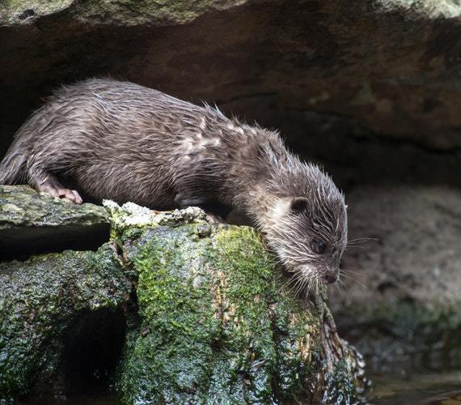
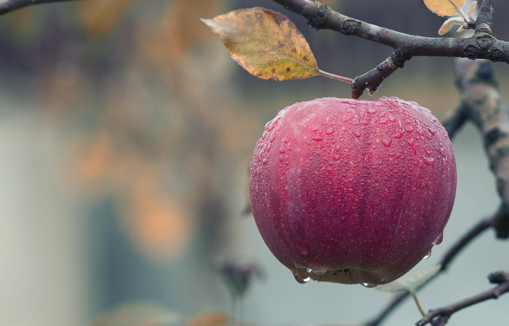

The English word "education" is made up of two latin root words -
ex - out
and
ducat-ducare - to pull.
‘To pull out what is within.’
Education means to pull out our hidden potential within. There is this hidden gem which can be seen and excavated by seeing the strength within.
It does not mean to fill up with clouds of information. History is replete with tired and old narratives. They are only 'true' because we give them that collective power.
Coaching is aligned with the true spirit of education - it means:
to support a person’s inner changes in such in a way that helps them get where they want to go.
efficiency in motion
Learning how to breathe efficiently, how to eat well, how to listen to the body, how to train the mind. A great athlete has aligned the heart with a deep form of self-love and creativity. All top athletes have a coach and yet we find coaches in every area of life - in business, in career developments and in sports. We see a coach to help achieve our goals in life and work. Coaching is a partnership between coach and client. The coach helps the client to achieve their personal best and to go beyond their wildest dreams in the diverse arenas of their personal and professional lives.
To go beyond fear we have to be open to seeing with new eyes. Change happens when we question and become open to seeing with the fullness of our imaginative genius. This is our primary focus at sutranovum.
The difference between coaching and therapy is that the coach does not see the problem.
The coach focuses on the goal to be achieved.
Take smoking
He won't say anything about the smoking.
Or he will simply say - you have the strength within to drop this. I see you doing it. I know you can do it.
He won't make it an issue that you smoke
He will focus on finding out what you enjoy doing - cycling? walking? How are you attending to yourself? How are you visualizing your present? What are the axioms of feeling that rule your worldview? He will be attentive to those. To which are creative. And he will focus on those exclusively.
He will question the validity of the roots of the stressed areas and look for what sensitivities need to be awakened in you. He will focus on seeing you with the life you aspire to flourishing all around you.
Counseling and therapy focus on the problem, on the victim mind.
Where there is emotional trauma there is this sense of a need for therapy.
But when we "therapize" or "counsel" ourselves into making the problem important we can lose sight of vision.
Coaching focuses on vision.
On the bigger picture.
On fresh green growth.
On what is generative.
When a field is poisoned we heal it by planting new seeds, adding water, mixing in fertilizer so that the soil is strong.
Then it has the inner strength to carry out the poisons, to heal the trauma - to focus on new heights.
Not wallow in pained histories - not allow behaviors to be governed by defining ourselves as victims...
But project fresh happy healed scenarios into form by the leveraging of wholehearted focused creative minds.
Coaching, when effective, ensures an individual draws out their very best; that they learn to harness the power of imagination and see what their former selves missed.
To come to live the vital lives of their dreams, to follow the paths of their most inspired selves, to flourish and to come to awaken, they must see with the eyes of inner vision a version of themselves that has gone beyond the uncomfortable lairs of self-deception, mediocrity and fear. Then, they naturally hit their target; achieve their goals and live true to their inner potential.
Coaches need not be an expert in the clients’ field of work. They do however need to have that nuanced quality of attention to help others focus on what is essential.
The coach sees what has already flowered in the barren desert. He is like the farmer that has the vision of a thriving blooming field where others may see a wasteland. He knows that, often, the rational mind must be usurped for the new potency to flower.
There is a story from India, from the Bhagavad Gita, which demonstrates an individual who realizes his inner power and who unleashes what the coach helps him pull out of himself - he celebrates his awakened potential:
Drona was a great archery teachers and he is charged with teaching the five Pandava brothers how to shoot their arrows at any given target and hit it.
He takes the five brothers out into the field to focus on realizing their potential - on connecting their arrows with the bird’s eye. On five different mornings, each with a different brother accompanying him, he asks:
Do you see the field?
Do you see the tree?
Do you see the branch that veers to the right?
Do you see the bird in that branch?
Do you see the bird’s eye?
The first four brothers answer "Yes" to every question.
Then Drona instructs them to fire.
They all miss.
The same questions are asked of Arjuna on the fifth morning.
He says no to every question, save the last.
“Fire” says Drona.
The bird falls to the ground.
He hits his target.
This story exemplifies that when you have a dream or goal one must be focused on what is key, on what matters - on real vision.
It is very much aligned with the wisdom herein:
"Go confidently in the direction of your dreams!
Live the life you've imagined.
As you simplify your life, the laws of the universe will be simpler.”
Henry David Thoreausutranovum offers coaching for individuals and businesses.
We are pollinators for growth

We work globally.
These are our working hours:
United States: ECT/PCT
Our fee structure is as follows:
Before enrolling for a coaching session we ask that you complete the form and submit it to us.
Then we schedule an appointment. The initial appointment lasts 1.5 hours and you can pay for your coaching session online.
Before the appointment we require you sign the disclaimer here
Totems and Catalysts:
Something people do is: they worship their teachers or an inspiring person. But they are only there to remind you about something you already know.
If we would only go inside, we would find our own clarity, wisdom and understanding beyond and surpassing all others.
As coaches here at sutranovum we exist as catalysts to support you coming into this deeper awareness in your own life.
Dwelling on past irritations or hurts perpetuates them and creates a vicious circle that serves to confirm these negative emotions. The circle can be broken by starting now to revise anything that you no longer wish to sustain in your world.
Neville GoddardDoes your past haunt you? Does it follow you wherever you go? Does it define who you are and what you can do? And who you want to be? Does it give you an excuse to be less than? An excuse to be a failure? An excuse or something to blame for the way your life is?
Nothing, we repeat nothing, has that kind of power over you. It is your thoughts, your feelings and your beliefs about your past that are defining your future.
One must get off the "poor me" boat and sail off to beautiful blue seas. From victim to cherished life the mind must be calibrated to use imagination and gratitude wisely.
To take responsibility for your life demands emotional intelligence. Do you believe you were abused or betrayed or hurt in the past and can't let it go? If you are still carrying it with you then you yourself have become the abuser and you are abusing yourself to this day. Let it go.
It is a choice and a decision to take your past with you and have it be involved in your decisions about your future. It's all you!
Everyone, we repeat, everyone has a story. Those that let it go, decided it didn't have power over them anymore. Whatever your story, it’s time to let it go and sail away. Our service helps with such shifts.
When applying fora coaching session please fill in this form below by answering all the questions as best you can. There are no right or wrong answers here. There is only what is true for you. Please do not skip any of the questions. Please answer in as much detail as possible. Send your completed form to coaching@sutranovum.com
For this last one be incredibly specific. There is likely to be overlap between the first question and the last.
Honesty and authenticity. And clarify about what you want to achieve.
The long explanation:Key to transformative change is an open heart and an open mind and an untethered imagination. No great sailor became his best self on tranquil seas. The storms of life teach him or her to be calm in the face of turbulence, to master self-confidence and self-assurance and to turn within to trust in himself and the power that resides there.
The fool tries to fix the world. The wise person changes themselves and so equips him or herself to see the world in a new light. They affirm and focus on self-love and it is this that makes all the difference. All our life experiences exist to bring us to this trough of healed insight. To drink of it and to imbue it in every aspect of our being. A great gardener listens to the needs of all the plants in the garden. He or she weeds out all negative influences that impede healthy growth. Self-knowledge is dry if not brought to application. And there lies the rub. Our inner conversations dictate our lives. We may see what we want and what our value is - but unless we own it, emotionally, we will come up short.
To embrace real change means to embrace our positive emotions and live from gratitude rather than to affirm fear and worry. It’s not just positive affirmations, it is also fully embracing gratitude and its power to transform the epigenetic stories in the body. This can reverse sickness, even chronic illness and return normalcy and balance to the body. Healing the mind means embracing a happy vibrant heart free of any accent on victim hood.
The belief in lack creates all upset. The deeper awareness of our abundance and plenitude stems from a deep well within us that embraces and celebrates our power. To trespass or miss the mark on our value is to undermine ourselves. Your world blooms when you love yourself. You cannot love another until you have mastered self-love. There would be no psychotherapists in the world if we knew how to love ourselves. Loving comes down to listening to what matters. To listen to what matters one must train one's sights on the heart. The heart does not believe in limits.
Walt Whitman wrote:
“Re-examine all you have been told in school or church or in any book, and dismiss whatever insults your own soul; and your very flesh shall be a great poem.”We are like magnets. We attract the underlying content of our minds, When our inner conversations are based on fear we create painful realities for ourselves. Then a cycle of deception can take over our lives. Introspection and insight can shift our behaviors to shape a totally different personality. One that nourishes and extends love rather than judgment and stuck records, broken hearts and burned bridges.
When we born into situations where emotional intelligence isn’t prioritized it takes a different kind of self-talk to surpass and transcend the personality that trauma shapes.
Forgiveness, gratitude and self love are all children of the same affirmation. That affirmation is: “I am love.” Love is sensitive, aware and guided by an intelligence that sees right to the heart of things.
Whitman again:
“I am the poet of the woman the same as the man, And I say it is as great to be a woman as to be a man, And I say there is nothing greater than the mother of a man.”A woman needs emotional security for herself and her child. That need is programmed into her. But just because the programming is there does not mean that it is automatically fully awakened.
When trauma impacts our lives we have a choice to disenthrall ourselves from the fearful beliefs and behaviors that attracted it in in the first place and to create new stories that cultivate a narrative of being blessed and saved from the errors of the past.
As Emerson witnessed: “There is a time in every man's education when he arrives at the conviction that envy is ignorance; that imitation is suicide; that he must take himself for better, for worse, as his portion; that though the wide universe is full of good, no kernel of nourishing corn can come to him but through his toil bestowed on that plot of ground which is given to him to till. The power which resides in him is new in nature, and none but he knows what that is which he can do, nor does he know until he has tried.”Joseph Campbell expressed the same sentiment in with greater brevity:
“What we don’t experience positively we will experience negatively.”So we are the arbiters of what we make of our lives.
This is ultimately true. Still, the right catalyst at the right time can have a powerful and uplifting impact. A loving mirror to help pull out what is good and healthy and balanced in us can transform our lives.
That is the focus of the democratic spirit. To see, to voice and to celebrate what is best in you and I.
Whitman saw the significance of this:
A teacher gives you information and helps to draw out your gifts. But he or she is the expert. With a coach, you are the expert on yourself. No one else can be said to know you as well as you do!
The job of a coach is to get you to “teach” him. To show him/her ‘the measureless wealth of latent power and capacity’ within you, and the aspirations that define your best self: in short: to capitalize on the blessing of being most fully and most authentically you.
2. Why we do it?We are inspired to coach because it feels to be part of our metier, our gifts in this life. Having learned to love oneself we are inspired to share the good news.
We have seen the impact of dedication to goals and focus and keeping the faith in our own lives and the quest of mastery is to liberate the mind.
Liberation simply means to remember who you are. To not lead our lives based on investment in fear, rather to focus on wisdom and faith in the strengths within us.
Life is a school and the purpose of that school is to master positive emotions and gratitude for our lives. A deeply happy person is no accident. They flower and blossom when an integrated view of themselves is fully awakened.
We can blame the world for our outer circumstances or we can go within and take charge of our lives in inspiring ways.
We affirm that you have the power to create the life of your dreams and whatever life you do have, whatever reality you experience, is, ultimately your creation. This is a deeply inspiring revelation. It means by keeping the faith in your imagination and yourself you have the keys to every lock metaphorically speaking. To celebrate this beautiful conviction - this is why we do what we do. It is the harbinger of all hope and meaning in life.
Neville Goddard, perhaps the greatest interpreter of the allegorical meaning in the Bible, wrote the following passages in his essay titled: "No one to change but self,”:
"Jesus turning to his disciples is man turning to his disciplined mind in self-contemplation. You ask yourself the question, "Whom do men say that I am?" In our language, "I wonder what men think of me?" Because consciousness is the only reality I must assume that I am already that which I desire to be. If I do not believe that I am already what I want to be, then I remain as I am and die in this limitation. Man is always looking for some prop on which to lean. He is always looking for some excuse to justify failure. This revelation gives man no excuse for failure. His concept of himself is the cause of all the circumstances of his life. All changes must first come from within himself; and if he does not change on the outside it is because he has not changed within. But man does not like to feel that he is solely responsible for the conditions of his life. I may not like what I have just heard, that I must turn to my own consciousness as to the only reality, the only foundation on which all phenomena can be explained. It was easier living when I could blame another. It was much easier living when I could blame society for my ills, or point a finger across the sea. and blame another nation. It was easier living when I could blame the weather for the way I feel. But to tell me that I am the cause of all that happens to me that I am forever molding my world in harmony with my inner nature, that is more than man is willing to accept. If this is true, to whom would I go? If these are the words of eternal life, I must return to them, even though they seem so difficult to digest. When man fully understands this, he knows that public opinion does not matter, for men only tell him who he is. The behavior of men constantly tell me who I have conceived myself to be. If I accept this challenge and begin to live by it, I finally reach the point that is called the great prayer of the Bible. It is related in the 17th chapter of the Gospel of St. John, "I have finished the work which thou gavest me to do." John 17:4 "And now, O Father, glorify thou me with thine own self with the glory which I had with thee before the world was." John 17:5 "While I was with them in the world, I kept them in thy name: those that thou gavest me I have kept, and none of them is lost, but the son of perdition." John 17:12 It is impossible for anything to be lost. In this divine economy nothing can be lost, it cannot even pass away. The little flower which has bloomed once, blooms forever. It is invisible to you here with your limited focus, but it blooms forever in the larger dimension of your being, and tomorrow you will encounter it. “All that thou gavest me I have kept in thy name, and none have I lost save the son of perdition.” The son of perdition means simply the belief in loss. Son is a concept, an idea. Perdido is loss. I have only truly lost the concept of loss, for nothing can be lost. I can descend from the sphere where the thing itself now lives, and as I descend in consciousness to a lower level within myself it passes from my world. I say, "I have lost my health. I have lost my wealth. I have lost my standing in the community. I have lost faith. I have lost a thousand things." But the things in themselves, having once been real in my world, can never cease to be. They never become unreal with the passage of time. I, by my descent in consciousness to a lower level, cause these things to disappear from my sight and I say, "They have gone; they are finished as far as my world goes." All I need do is to ascend to the level where they are eternal, and they once more objectify themselves and appear as realities within my world. The crux of the whole 17th chapter of the Gospel of St. John is found in the 19th verse, "And for their sake I sanctify myself, that they also might be sanctified through the truth."We at sutranovum abide by this wisdom fully and wholeheartedly. The wisdom of self-love.
say hi to sutranovum
Email us your completed coaching form or specific questions at:
You can pay for your coaching session online here.
We offer life coaching services. Either in person at our office or online/over the phone. Check out our testimonials pages. And our Yelp and Google Business pages.
sutranovum
c/o Shared
739 Bryant Street,
San Francisco,
CA 94110
Tel: 1-415-867-5675
The session I had with Anne was truly motivational and encouraging. Anne was so open and friendly and was so easy to talk to. She has so much patience and has wonderful knowledge of Neville Goddard's work and personal experience with his techniques. All is possible to achieve..there are no limits and I left the session feeling on top of the world and that I can really achieve anything and everything I desire. She gave me some wonderful advice and tips that I still use. Thank you Anne, A.K.
I felt as my life was going in circles. Anne's warmth and encouragement has helped me to realize unless the change comes from within, my experience will remain the same. She suggested to me that I would be mirroring the same image of yesterday. If I were to write a new script for my next book, it would have to come from the inside. To know my own wisdom. Through her loving counsel, I am inspired to write the first chapter, full of adventure. J.B.
I was completely overwhelmed and clueless to find balance in my work and home life. Nathan gave a different point of view of life. He helped me to think more deeply and channeled my focus on what is important. He guided me to a point where I was confident to make difficult decisions and share my thoughts and ideas with my peers and leaders. Now, I look forward to dealing with situations rather than avoiding or stressing over them. R.M
I used to stress out a lot over small things. I have had issues with self-doubt. Sometimes I engage in a task and I feel overwhelmed. Nathan helped me to visualize my goals from the standpoint of feeling relief that they have been accomplished. He helped me focus on my inner strength and believe in myself. He also taught me to find out the pattern in my mind that recreates the same old negativity. I wish I would have met him earlier in my career. I am getting better and better every day. From the bottom of my heart, I appreciate Nathan's selfless help. I am happy to work with Nathan. S. B
If you enjoyed your coaching session and feel it would support a friend or colleague please free to refer us. Every successful client referred this way pays you $50.
Name of person you wish to refer: Email of person you wish to refer: Your name: Your email:
Personal message:
Email us at coaching@sutranovum.com
The heart informs the head and the head informs the hand. This is the way of emotional wisdom. When this is abstracted challenges arise. When honored, this is not the case. Technology must serve man.

This is not negotiable with any manner of clever arguments. Fear will create movies and pictured hysteria that sees technology attacking man. That is the narrative associated. We are bigger than this. We at sutranovum recognises this. It suffices.
Imagine a world where man is in harmony with himself, his colleagues, his children, and his neighbors.

What does it look like? To serve and coach growth seems integral to all human endeavors. Certainly when wisdom is involved.Every organization, be it a business, NGO or charity or a government body is peopled by individuals. And what we draw out of ourselves is born of what we see in ourselves.

It all starts and ends with the individual. We can create all kinds of technological advances but fear is what keeps man bound. Wisdom, therefore, prioritizes valuing the human spirit; listening to his or her nuanced sensitivity and innate intelligence. Not being lulled into deceptions about their apparent obstacles to growth. To embrace the inspiration that is aligned with our spirit - rather than a mindstate populated by the imposition of inhibition and emotional baggage requires being attentive to our intuition and sensitivity; practicing gratitude and forbearance. We can choose to look with fear or we can re-focus our intent and our attention and see in to form a deeper perception of ourselves. One that is more freeing and liberating. One that breaks the boundaries of the limits we have unconsciously imposed upon ourselves.
There are two forms of charity. One is ego based. It sees a world of victims. It seems to help those victims. It is founded on fearful empathy. Fearful empathy is: “ I see and feel your pain.” It is naive, for even though it comes from a place of 'meaning well' it tends to perpetuate the victim mentality. True charity is founded on wise empathy. This sees only the strengths in us, it sees what is innocent and when can and did transcend painful past experiences...what reaches for the stars, both literally and figuratively.

An NGO or charity can create many problems or help liberate the world of them.A business can do the same.Surely a business should do good and an NGO should enrich the economy. It Is not difficult to ponder a time when these two approaches merge. Take, for example, a shoe company that makes shoes that are very aware of the impact of the shoe on the curvature of your lower back. That is a form of preventative care. The lines between business and NGO seem quite arbitrary and not so intelligent.If our products and services are doing well in the marketplace they are serving people. If we are creating problems for ourselves/others or if we are perpetuating a victim mind state - in ourselves or others are we being emotionally intelligent?
We can be efficient at being ineffective. We can be inefficient at being effective. And efficient at being effective and inefficient at being effective. And: "The busier you are the lazier you are." Tara Singh True productivity has space to it. It focuses on what is important. Being efficient at being effective is working smart. But we must be emotionally smart as well as logically so. An NGO can "teach men to fish" or it can give out handouts that sustain victim stories. The first activity is effective and hopefully productive. The latter is ineffective. Aid has to be emotionally intelligent to be truly productive and see only the strengths before us and within us. Since the dawn of industrialized society and the digital age man has been through many changes. Things have sped up. Watch a movie from 50 years ago and how slow is the pace compared to one of today.
The shift from the natural rhythms of homesteads and farming communities with their rotating and varied crops and livestock - that creates and sustains rich soils - to the modern pressures on the human being can be considerable. Unemployment has come like a scourge on the landscape. But it need not be a part of our society. Every human being can contribute. We grow when we do. Among the great minds that have turned their attention to the impact of industrialized society, there was the visionary engineer Buckminster Fuller who saw the planet itself as a spaceship and wrote a book about it with that as its title. He said: “Dare to be naive.” We disagree. We believe that is folly. Dare to be innocent yes, but not naive. That is a fool’s wisdom.
Balanced ecosystems
There is a parallel between the story of the reintroduction of wolves in Yellowstone National Park and the homeless situation in many cities today.

When the wolves are absent the ecosystem (natural economy) degenerated. When they were reintroduced their presence made sure the deer moved away from eating all the fresh growth. The wolves tend to eat the sick and the old and so the herd is kept healthy and streamlined.
With the reintroduction of the wolves, the deer couldn't just hang out at the watering holes and eat all the vegetation by the river. They had to move more and this meant the fertilizer of their droppings got spread out, enriching the land more uniformly. The saplings came back and with them, the songbirds returned and the river banks became stronger.
Recently, the shanty town has come to America - from Los Angeles to Pittsburg, the homeless have arrived because society, in part, has lost it's focus on self-worth. Affluence without wisdom is self-destructive. But affluence with wisdom is creative. With the homeless unemployed population comes hygiene problems, economic challenges, and social decay. All these things are the products of a lack of vision. And a lack of vision always comes down to a lack of self-love, emotional intelligence, and imagination.
These lines by Buckminster Fuller really has captured many an imagination:
“We should do away with the absolutely specious notion that everybody has to earn a living. It is a fact today that one in ten thousand of us can make a technological breakthrough capable of supporting all the rest. The youth of today are absolutely right in recognizing this nonsense of earning a living. We keep inventing jobs because of this false idea that everybody has to be employed at some kind of drudgery because, according to Malthusian Darwinian theory he must justify his right to exist. So we have inspectors of inspectors and people making instruments for inspectors to inspect inspectors. The true business of people should be to go back to school and think about whatever it was they were thinking about before somebody came along and told them they had to earn a living.” "Bucky" is to be admired on many levels but this quote should be examined carefully for a number of important reasons. Earning a living is not "nonsense." It's an essential part of being an animal; of being in harmony with one's environment. Ants, monkeys, man...all of us work to live. When we do it wisely, there is ample space and no fear and we flourish, as individuals, as families, as nations and even as species.
Kahil Gibran, the poet, wrote:
"Work is love made visible. And if you cannot work with love but only with distaste, It is better that you should leave your work and sit and the gate of the temple and take alms of those who work with joy. For if you bake bread with indifference, you bake a bitter bread that feeds but half man's hunger."
Work can be seen as a great blessing. To put ones hand's do good use. The word for hand in Latin is ‘manus." It gives us the words:
Manifest
Mandate
Manual
Manuscript
etc
And 'man'
Man is he ‘who uses his hands.’
He can do it wisely and that, essentially, means that the hand is connected to the head which, in turn, is guided by the heart.

Or he can feel overwhelmed and fearful by the pace of changes and a kind of apathy can set in when a lack of emotional intelligence smothers out the wisdom of the human heart and takes over the running of the mind.
There is no finger pointing or blaming in this way of perceiving things; the opposite is in fact true. To go to the root of things one must probe and see what is at the core of a situation, so to be emancipated from the problem which is, of course, essential to embracing the solution most fully. What makes man ‘man’ is his capacity to use his hands and to do meaningful work. Work is not the purpose of life but it gives man a structure and dignity. It helps hone his purpose. The land needs tending, there is so much we can do to improves our society through the wise application of our hands and management of resources. Creativity is deeply connected to happiness. And when wisdom is at work, there is the courage to go beyond fearful approaches. To foster real change, to be creative and share of our worth through our endeavors, our imagination and our spirits are brought to life by questioning the status quo and investing in the potentials we harbor. Regarding Bucky's second point about technology being a source of liberation, great, we should welcome that. Embracing technological advancements is natural and healthy. But “waiting by the river” and propping up dejected spirits in the name of the “spurious” second coming of Bucky Fuller is not.
It is inspired to contemplate using technology for more refined and liberated lives.
Yet an economic story where man has stepped away from his creative output is like the deer who are not kept in check by the presence of the wolves. The police are not wolves. They do not solve the homeless situation, They do not regenerate the river. They put the homeless on the greyhound bus. Or they clear out the tent cities and the disenfranchised move on to somewhere else. The problem is not cured. Not resolved. Just a band-aid on a broken leg. Seeing people as victims is not compassionate. Real compassion sees the strengths in people. Their “get up and go,” their innate talents, their wisdom, and innate power. No, what heals that situation is a different path inwardly regarding self-worth and passion for the creative experience. Is it 'compassionate'’ to keep people down living by the river waiting for the second coming of Bucky or is compassion seeing such people genuinely engaged in the thriving economic heart of the community? Surely, the latter is based on true vision.
Sometimes, the apparent story isn’t what it seems. Alan Savory in Africa is the perfect example. He was hired by the Zimbabwean government to figure out land management to reverse desertification and he discovered that the conventional wisdom was wrong. Conventional wisdom said that the land could only handle small amounts of grazing animals otherwise desert formed. The opposite is actually true. Given the natural predators were gone, large amounts of grazing animals destroyed the land - but when kept in check by putting them in makeshift pens at night they pooped all over their confined area and that fertilizer was vital to regenerative processes in the ecology of the land. This reversed desertification absolutely.
There is a direct connection between economic regeneration and how we engage with each other. Trust is key to man’s flowering. Trust in himself. Trust in each other and who we are. When people are given a fish, rather than taught to fish, we create dependence. We do not educate. Educate means to pull out what is inside us.
Villgro is an organization out of India that coordinates philanthropy with mentors and a deliberate focus on leveraging latent talent and maintaining sustainable economies. They are by far one of the most successful charities in their field, for the simple reason that they recognize how people need the right quality of relationships to truly feel appreciated and to appreciate - to really flower and flourish.

Image courtesy of Villgro.org
No money is given to an entrepreneurial project unless there are mentors in the story. providing that vital human connection. This fosters strong supportive communities and happy thriving businesses. There is great wisdom in these collective approaches. And profound emotional intelligence.

When we come to ourselves in such a spirit - we are choosing to sink or swim. We can swim and enjoy the journey or we can lose site of the emotional wisdom that matters. That is surely not a choice. It is a vital decision. Such intelligence can inform our economic stories. Indeed, it is absolutely vital that it does. A choice is one that is made between alternatives. It is arbitrary. In contrast, a decision is a decisive action. It is made because we have recognized the path of least resistance, of greatest meaning, of deepest value, of clearest harmony...because we have looked without distraction, we see to the core of things and we are not deceived. Such things give us reason to pause...and cause for celebration.
They are the weave of who we are.

Our retreats are primarily devoted to emotional intelligence. To embrace self-love is to outgrow deception at the ego level. You are the light of the world. You are the epicenter of meaning and the font of all healed perspectives.
We focus on coaching out the strengths in you. To be grateful and wise often can involve a retraining of the mind. We focus on going away into beauty spots in nature to access those quiet places within potent and aligned with our calmest most empowered selves. Be leaving the workaday world we embrace retreats that re-align ourselves with our most vibrant and joyous selves.

sutranovum runs various retreats over the course of a year.
To learn more about upcoming retreats sign up here:
To coordinate a retreat in your country or to a city near you contact us at retreats@sutranovum.com
Emerson wrote that:
Animals respond to love. We all do. Animal means "having breath." That is the origin of the word in latin. To be alive. To breathe.

Many books have been written about plants and their emotional lives.
The Secret Life of Plants is perhaps the landmark book
All indigenous cultures have known that plants are part of a united unfolding and consciousness.
Plants feed us. Vegetables, fruit, legumes. grains...all play a vital part in our diets.
Many traditions around the world use plants for vision quests. From plants we get weed and wine. They have their place as avenues to stress reduction in a sane world. As with any substance that has the temporary capacity to color perception - they can cloud our perception. They can prevent clarity. They can become crutches.
At sutranovum our focus is not so much on the vision quests associated with certain sacred plants. Plenty of people offer such services. Our focus rather is on seeing plants as an integral part of human life. They feed and shelter us. They give us oxygen and the life support systems that organic life is dependent on.
A child that has the right kind of relationship with nature knows how to nurture the natural world around them.
When nature is treated wisely, it comes to adore man. That is the natural geometry of things. That is when we are in accord with who we are. A plant has consciousness like you and I. To honor that consciousness demands self-knowledge and a relationship with nature that has outgrown the idea of waste. This is the harmony that horticulture was birthed to teach us.
The root meaning of ‘economy’ means to do with the management of a household. Abraham Lincoln said that the future lies with what one man makes of tilling a piece of land. That is actually the original meaning of husband. One who tends the land. A farmer. The Greeks saw economy as the intrinsic things that need to be gotten right to make a happy balanced functioning homestead.
Mankind is one big family. Carl Sandburg, the poet, wrote:
“I heard a talk which wondered if we are living at the dawn of the age of horticulture. The speaker said that nature adored man. I had never heard anyone say those things before. It seems so far away from the sophisticated city lifestyle but If you imagine 30 years hence or a few hundred years hence, it is entirely plausible.
It cannot happen when the earth energies dominate man's consciousness. When unchecked, they lead to proliferation of armament and psychological insecurity, which whetherseen or unseen, leads to greed and isolation, degradation, ruthless competition and violence. Tribalism. It is the way of nature. Bigger horns, more elaborate displays of dominance.
Horticulture is the basis of culture. Together they deliver man out of his hapless predicament (the predicament is actually a crazy idea and nothing more...when you see how the fact of a nurtured productive earth undermines it totally).
The economy is rooted in the family and the garden. That was the Greek model, the root of the meaning of the word "economy" when it was coined. It was and is self-sustainable. The wild pear and crabapple after a million trials gave us the apple and the pear.
So we just began eh? It seems almost impossible to envisage our time, with all its strife, as the dawning of the age of horticulture. But what better gift to gift our children? What is more animated and alive than a garden and a pasture that is home to happy animals?
Nature does adore man when he nurtures the garden he was born into. And you can feel it if you wander far enough along the river, deep enough into the wild wood. When you tread lightly but with great firmness; as you push the young seed firmly into the soil like tucking up a child in bed. And you find a way to see the tremendous beauty in a field. Like a child sees it. Fresh and new.
But, more than the wonder of the child, spellbound by the honey bee...there needs to be the stewardship of the wasteless economy. The perennial cash and balance system of the soil. Soil though that is so alive. Alive with compost and flowers for the bees. Free of pesticides and monoculture.
It is an imagined world, far removed from the reality of our modern thinking...but that didn't stop man birthing the apple from discerning among wild fruit.”
Industry is what creates the economic systems of our modern world.
The power lines, the roads, the ships, the airports and telephones.
If we lack emotional intelligence we create war and upset.

To take care of our skin requires eating wisely, getting enough sun, drinking enough water.

To take care of the earth means looking after the soil. It is the skin of the earth.

Being in the body is a profound journey. The flowers come up from the dirt. And each day the sun also rises. Civilization marches forward and man, you and I, we are the thick dense vapor of this miraculous story. We are the breath, the yearning for the stars, the great hope of what may and can be. We are what is unfolding. We have the choice to align ourselves with beauty. We can brook no alternative.
Where the mind is incarcerated in deception, then man is at the back and call of his own folly. But in you, in all of us, in every atom of creation, there is something that can transcend the limitations of the past. There is something that can rise up and defy the apparent odds.
What is apparent may not have any relationship to vision.
Vision can see what the body's eyes neglect to see. And it is this that births what is inspired. Inspired mean to be "in spirit" - to be aligned with who we really are. All of creation attends this unfolding in man with bated breath. When such clarity of perception is awakened in the human being then the destiny of planets is altered. This is the potential within man.
The time we live in is but a blimp in the unfolding of universes.But to live fully means to embrace a great and profound story. It matters not when you die. And, in truth, there is no death. It matters only that you fully live.

What vision sees, when awakened, cannot be put to sleep. This, the blessing of who we are.
To love oneself is to be sincere. It is to be dedicated. Not to a lover or a god. They follow, "like the day the night." But, first and foremost, to oneself. Do you listen to your knees, to your shoe sole. The degree to which you do (free of obsession) demonstrates. And so it is.
Sports are all about aspiring to the heights of human potential and bringing out our most excellent capacity. The first Olympians laid out a track. They ran the length of it. They gave themselves limits so that they may push the limits. To excel. A firm resolve liberated of malice and false charity will take you where you need to go.
The city must have a relationship not just with human nature but with nature. With the flowers and the bees. It is part of who we are. An essential part.
Essential means 'absolutely necessary.' Oxygen, water, the right quality of attention, self-love. These are all essential. Totally needed. Our flowering happens contingent on them - but only the inspired happy spirit that is aligned with such things, such values...only he or she has the intelligence to bring these qualities to the fore of their being. That is the discernment. It blossoms when we learn to love ourselves.
The city is like the vital organs of the body to the nation. The city pools experience and knowhow. But it can also become a place to escape to and a place for escapism. When we don't listen to our urgent and absolute needs we create outlets. We lose our sensitivity and we manifest pain born of not being attentive to the refined inner story of our nature. Not our inner nature but our nature. For what we demonstrate within becomes our outer world. If we are paranoid and fearful we create a reality on such foundations. If we learn to see through our fears and to trust in plumbing the depths of our deepest nature then we awaken hidden potentials. We become more authentic, more courageous, less isolated and alienated, less escapist. And how wondrous is the nature of the inner creatures that we find in those depths.
Every cell in our bodies seeks out harmony...
It is elemental. Ultimately, the organizing principle is within us. That is where our biology meets our mythology. Where genes meet stories...
harmonious storehouses of stories within. That is this man...this wise storytelling ape. It is what evolution portends.
We get the word music from muse. A great athlete is no accident. What we attune ourselves to dictates our path, our ascension as a species. As individual, but as emissaries of the species. Man, Woman. He or she who fashioned tools. Who set out to make music of the spheres from the stuff of the spheres. Music is the language of the muses.
A muse is one a word for this spirit that is inspired through us. And music can take us to heights of happiness, to depths of reflection. Music then is one of the emotional vehicles for the human spirit. This boundless quality in the human being. To rise to his true stature. We can put a man on the moon. We can do many clever clever things. And with passion, with peace, with music. We can do wise things. Keats the poet, on his tombstone, it read:
"Here lies one whose name was writ in water."
On our epitaph will it read: Here lies a generation that brought lasting peace and abundance. The choice is yours. The choice is ours. It's not a choice. That's the funny thing...the difference between a decision and a choice. A choice implies alternatives. The bird's eye is not seen. The focus is lost. Scattered. A decision does not entertain an alternative. It is decisive action. It is liberated from the prison of choice. It has found its origin. It's authentic self. That is goodness. That is discernment. Real duty is not anything other. It is the wisdom of the heart expressed outwardly. That is all. And nothing, nothing can limit that one. In one. In all.
Essentially is demands being familiar with yielding can we yield to the wind of the times to the wisdom of an age the music of things. Music is a celebration - a great blessing, a celebration of the great blessing of being human, a creature who touches the earth, is of the earth - yet aspires to something other. There is in you, in I, in man. An aspirational spirit - to aspire - to wish to attain - to inspire - to breathe in or attain - to connect and serve the spirit within, the muse - that is the music of emotional intelligence...it leads with the heart and everyone can breathe a sigh of relief. Because it does.